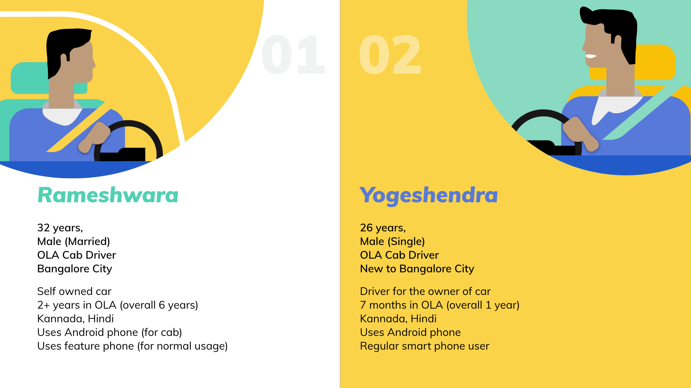

To enhance the user experience of OLA drivers

About The Project
The project is the outcome of 4th semester design project for a duration of 10 weeks during February - April 2018, at the National Institute of Design - Bengaluru, India.
The objective of the design project was to understand and apply the systems/service design process and methods for conceptualization, while keeping the focus on System/ Service design paradigm to conceptualizing physical devices for home, automobile , healthcare, banking and retail.
Design Process
Click here to get to the final solution directly!User Research
For this project I intended to do something with the transportation system in the city (like Bangalore). So, I started off by conducting a participatory brainstorming session with a group of people who had different experiences in travelling within a city (going to college / office / resturants / pubs etc.); and asked them to write down with anything that comes to their mind related to transportation within a city like Bangalore (without discussing anything with other participants).
Participatory brainstorming session.
After the brainstorming session, all the points that the participants had jotted down were discussed amongst the participating group, and affinity mapping of the ideas was done to explore the different domains that emerged from the exercise.
As an output of the above exercise, few problem domains emerged (listed below) which were wide enough for the participants to frame HOW MIGHT WE question on those topics.
- Information accessibility
- Language Barrier
- Safety
- Causes of Frustrations (Commuters / Drivers)
- Infrastructure
- Expensive (Travelling cost)
Later on, I invited different group of participants to rate the How Might We questions, so that the voting would remain unbaised and brings new perspective to the already identified problem areas.

How Might We : Voting and Discussions with peers
How Might We encourage the urban commuting TO enhance the experience of people with the help of technology?
For this I started off my primary research by observing the interactions between transpotation service providers (drivers / conductors / air hostesses etc.) and passengers.
Observations made during the various inter and intra city travel
Being in constant discussions with my faculty, friends, and fellow designers; I realised there were many solution already existing for the commuters but there were hardly any solutions which took care of the drivers / conductors' experience while they perform their duty.
So I decided to work on a smaller system of aggregated cab services in India, to understand how drivers are affected and how their user experience can be improved?
Final Design Brief
Enhancing the user experience of third party cab drivers in aggregator services in India.

Primary Research - Observing OLA / UBER mobile apps being used by cab drivers.
Secondary Research - Policies related to cab aggregator services

Key Observations
- Drivers are concerned about their life and car’s safety, driving late in night
- Complaints made by drivers are not acted upon immediately by customer care
- Most of the government and other cab policies are not cab driver friendly
- Many cab drivers have been falsely alleged for harassment of female passengers
- Multiple cab drivers park their cars together on the road while staying for the night, for safety reasons
All these studies pointed out that there is an opportunity area to intervene in designing better user experiences for the cab drivers.
System Overview : City Transportation (Cab Aggregator Services)
Overall Transportation System overview

Government Policies Sub-System
Cab Driver's Experience Sub-System
Rider's Experience Sub-System
Why OLA as a case study for this project?
For this project, the drivers' experience sub-system was selected to work on further. For this cab aggregator Services like OLA and UBER were being considered, out of which OLA was selected as the case study because of the mentioned figures about OLA (being a major player in Indian market).
Service Blueprint
Perspective Framework - W.W.W.W.H

Personas

Customer Journey Map
For this journey map we will consider the persona of Rameshwara, who starts of his day as OLA driver at 6:30 am daily (except Sundays). Below is a scenario illustrating a day in life of cab drivers like Rameshwara.

Design Concepts


Proposed Design Solution
Based on the overall understanding of the system and user experience of cab drivers, an enhancement list of new features is proposed for the existing OLA driver's mobile application as the end solution.

User Interface Design


* The content is an exclusive set of features proposed in the solution, and may be subject to copyright.
Please get in tocuh with me to discuss the content offline.


Final Prototype
User Testing
With actual cab drivers
Observations from the UT
- Mental model of the mobile app is existing with the OLA Partners.
- They easily got used to the concept of how to access the new features.
- However, they were sceptical about possibility of these features because they feel they are on their own and OLA would not go through all of these pains to help them out.
Future Scope
The mobile application features list for OLA is just the 1st part of the BIG solution as an outcome of this project. Apart from the mobile application enhancement, I am in the process of making a business model proposal for cab aggregator services like OLA / Uber keeping in mind the cab driver's Experiences, which NOT ONLY provides them new avenues to generate revenues for their business model BUT ALSO allows them to retain a loyal drivers fleet for the long run.
The development of the business model is currently a W.I.P (work in progress), please check back for the business model section (to be added soon).
Key Takeaways
- Realised the how important it is to bounce off your ideas to different people and get their perspective.
- Made use of the methods that I learnt during the Bangalore Service JAM 2018, e.g. participatory brainstorming and HMW techniques.
- Build a basic understanding of how to study a service / system, using various perspectives. Learnt how to use PESTEL and WWWWH frameworks.
- Was able to conduct an actual user testing with real users (i.e. Cab Drivers) though very few in numbers; realised how easy it would be to test something which they are really used to (in this case existing OLA driver mobile app).